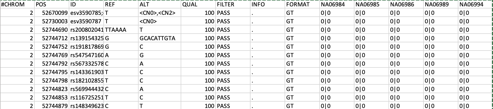

Last updated: 2021-06-23
Checks: 7 0
Knit directory: Transpose/
This reproducible R Markdown analysis was created with workflowr (version 1.6.2). The Checks tab describes the reproducibility checks that were applied when the results were created. The Past versions tab lists the development history.
Great! Since the R Markdown file has been committed to the Git repository, you know the exact version of the code that produced these results.
Great job! The global environment was empty. Objects defined in the global environment can affect the analysis in your R Markdown file in unknown ways. For reproduciblity it’s best to always run the code in an empty environment.
The command set.seed(20210623) was run prior to running the code in the R Markdown file. Setting a seed ensures that any results that rely on randomness, e.g. subsampling or permutations, are reproducible.
Great job! Recording the operating system, R version, and package versions is critical for reproducibility.
Nice! There were no cached chunks for this analysis, so you can be confident that you successfully produced the results during this run.
Great job! Using relative paths to the files within your workflowr project makes it easier to run your code on other machines.
Great! You are using Git for version control. Tracking code development and connecting the code version to the results is critical for reproducibility.
The results in this page were generated with repository version 268ecb4. See the Past versions tab to see a history of the changes made to the R Markdown and HTML files.
Note that you need to be careful to ensure that all relevant files for the analysis have been committed to Git prior to generating the results (you can use wflow_publish or wflow_git_commit). workflowr only checks the R Markdown file, but you know if there are other scripts or data files that it depends on. Below is the status of the Git repository when the results were generated:
Ignored files:
Ignored: .DS_Store
Ignored: analysis/.DS_Store
Untracked files:
Untracked: analysis/princess.Rmd
Untracked: analysis/princess623.docx
Untracked: assets/
Untracked: workflowR.transpose.R
Note that any generated files, e.g. HTML, png, CSS, etc., are not included in this status report because it is ok for generated content to have uncommitted changes.
These are the previous versions of the repository in which changes were made to the R Markdown (analysis/princess623.Rmd) and HTML (docs/princess623.html) files. If you’ve configured a remote Git repository (see ?wflow_git_remote), click on the hyperlinks in the table below to view the files as they were in that past version.
| File | Version | Author | Date | Message |
|---|---|---|---|---|
| Rmd | 268ecb4 | mariesaitou | 2021-06-23 | Add my first analysis |
like this 
PRINCESS Results:
Phased BAM Files
/mnt/SCRATCH/princesstest/result420/LLsal/result/minimap.hap.bam
/mnt/SCRATCH/princesstest/result420/Barry/result/minimap.hap.bam
/mnt/SCRATCH/princesstest/result420/tanner/result/minimap.hap.bam
/mnt/SCRATCH/princesstest/result420/Bond/result/minimap.hap.bam
/mnt/SCRATCH/princesstest/result420/Klopp/result/minimap.hap.bam
/mnt/SCRATCH/princesstest/result420/Brian/result/minimap.hap.bam
Phased SV VCF Files (Not all variants are phased)
/mnt/SCRATCH/princesstest/result420/LLsal/result/minimap.SVs.phased.vcf
/mnt/SCRATCH/princesstest/result420/Barry/result/minimap.SVs.phased.vcf
/mnt/SCRATCH/princesstest/result420/tanner/result/minimap.SVs.phased.vcf
/mnt/SCRATCH/princesstest/result420/Bond/result/minimap.SVs.phased.vcf
/mnt/SCRATCH/princesstest/result420/Klopp/result/minimap.SVs.phased.vcf
/mnt/SCRATCH/princesstest/result420/Brian/result/minimap.SVs.phased.vcfPhased SNP VCF Files (Not all variants are phased)
/mnt/SCRATCH/princesstest/result420/LLsal/result/minimap.phased.SNVs.vcf.gz
/mnt/SCRATCH/princesstest/result420/Barry/result/minimap.phased.SNVs.vcf.gz
/mnt/SCRATCH/princesstest/result420/tanner/result/minimap.phased.SNVs.vcf.gz
/mnt/SCRATCH/princesstest/result420/Bond/result/minimap.phased.SNVs.vcf.gz
/mnt/SCRATCH/princesstest/result420/Klopp/result/minimap.phased.SNVs.vcf.gz
/mnt/SCRATCH/princesstest/result420/Brian/result/minimap.phased.SNVs.vcf.gz
(1) Incorporate SVs from Sniffles and other software.
What we have:
(1-1) Original BAM file/BAM files from Princess
(1-2) SV/SNV vcf files from Prinvess
(1-3) bed file of the SVs.
CHR START END SVLEN SUPP Alto Arnold Barry Klopp Simon Tanner Tess
ssa01 188519 207789 19270 1 0 0 1 0 0 0 0
ssa01 199989 321264 121275 2 1 0 1 0 0 0 0
ssa01 200189 321264 121075 3 0 1 1 0 1 0 0
ssa01 205970 317246 111276 3 1 1 0 0 1 0 0
ssa01 283115 363277 80162 2 1 0 0 0 0 1 0
ssa01 285368 353148 67780 5 1 1 1 0 0 1 1
And VCF files of the SVs (from Jasmine)
#CHROM POS ID REF ALT QUAL FILTER INFO FORMAT 0_../klopp_s.bam 1_Sample 2_klopp_
s
ssa01 100054015 0_4282 AGAGTCAACATGATGAGGACCACAGTACAGAGTCAATATGACAATATGATGAGGACCACTATACAGAGTGAATATGACAATATGATGA
GGACCACTGTACAGAGTCAATAAGATGAGGACCACTGTAGAGTCAATGTGACAACATTATGAGGACCACTGTACAGAGTCAATATGACAATATGAGGACCACAGTACAGAGTCAATAAGA
TGAGGACCACAGTAAAGAGTCAATATGACAACATTATGAGGACCACTGTACAGAGTCAATATGACAATATGAGGACCACAGTACAGAGTCAATATGACAATATGAGGACCACAGTACAGA
GTCAATATGACAATATGAGGACCACAGTACAGAGTCAATATGACAATATGAGGACCACAGTACAGAGCCAATAAGACAATATGACGAGGTCCACTGTACAGAGTGAATATGACGAGGTCC
ACTGTACAGAGCCAATATGACAACATGATGAGGACCACTGTAGAGTCAATGTGATGAGGACCACGGTACAGAGTCAATGTGATGAGGACCATGGTACAGAGTCAATGTGACA
A . PASS SVTYPE=DEL;RNAMES=0b92a48d-c9e3-48f1-ab80-1ee281b3199a,3196e50d-8561-495f-af07-fa0142379030,4215
8657-4027-4f2c-a958-e3008a29f39f,5eb21035-5e3c-4f6f-bd71-92ef6100eb9b,8f974518-2c29-413e-b019-7b89ea4d85cf,9417c2f7-0e69
-4343-8c91-0e1e34b1388a,d80c3a2b-5ac3-4175-8a70-ab6df970fb87,ea1c6027-7b5a-4069-9870-0e2713def3c7,ef6c12ca-225d-43e2-936
5-32e4f9db1ab0;END=100054574;SVLEN=-559;RE=9;IRIS_PROCESSED=1;IRIS_REFINED=0;STARTVARIANCE=0.000000;ENDVARIANCE=0.000000
;AVG_LEN=-559.000000;AVG_START=100054015.500000;AVG_END=100054574.500000;SUPP_VEC_EXT=110;IDLIST_EXT=4282,svim.DEL.42982
;SUPP_EXT=2;SUPP_VEC=110;SUPP=2;SVMETHOD=JASMINE;IDLIST=4282,svim.DEL.42982 GT:IS:OT:OS:DV:DR 0/1:.:DEL:.:9:8
0/1:.:DEL:.:1:. ./.:NA:NA:NA:NA:NA
ssa01 10009730 0_1054 T TAGTCACGACAGTTGGTGAGTTACAGGGCAGCGATATGGAGTCCGATGAATGGTGAGGTTGCAGGCAGCATAT
. PASS SVTYPE=INS;RNAMES=0ebcc4ec-c2a1-4046-b55d-205e0d8024c3,15105fd5-697c-4ece-9913-160e223fd526,1ceab9a7-b86
8-4329-ae45-105e3f25d7c1,1d684bf8-7084-4eb5-90d4-b4797ec743d2,32aac4c3-288e-4afe-834a-e2c34b6ecfb7,4a5e4dc6-346a-4213-99
01-625f372edf05,52340e02-9e3f-4b91-8485-6afe83f9c8d9,5b61e2c3-5fee-4321-b656-d0b8b665a5b8,62c523a1-f072-4bba-8869-2ff9ee
f3d008,648cc51d-012a-4138-81ee-b640f68adf41,6a6b72be-ed85-49d1-a90f-b4e2d6b12266,704d7cf3-fcac-4aef-b6bf-0124d058d32d,7e
b3b599-7e0c-4cc3-a36f-72f264978737,96043eb3-4d75-494f-af5e-3fa1871a73b6,aed4613e-f713-4951-bb1a-cbbc55b61114,af835a14-a5
ea-49b9-8436-89accab15cdf,bf0016f7-f138-409b-8aa6-f3ba706cee56,c0abb8ee-d06b-4e25-9c38-7364bfad7836,c812ae4d-db7d-4a73-a
f28-0377e6524eac,c83dbd1a-4195-47a3-8098-b4f2eeed1178,c9a008ce-a840-4870-aec8-e91bb633c503,ce3d8d0e-0f04-43fb-8450-7a266
610e0fb;END=10009730;SVLEN=72;RE=22;IRIS_PROCESSED=1;IRIS_REFINED=0;STARTVARIANCE=182.250000;ENDVARIANCE=182.250000;AVG_
LEN=71.000000;AVG_START=10009716.500000;AVG_END=10009716.500000;SUPP_VEC_EXT=110;IDLIST_EXT=1054,svim.INS.14490;SUPP_EXT
=2;SUPP_VEC=110;SUPP=2;SVMETHOD=JASMINE;IDLIST=1054,svim.INS.14490 GT:IS:OT:OS:DV:DR 1/1:.:INS:.:22:2 0/1:.:INS:.:22:. -./.:NA:NA:NA:NA:NA
(2) Gain a VCF file with phased SVs and SNPs from multiple individuals.
- Current problems
(2-1) ref/ref loci is not descrived in individual VCFs and turned into ./. rather than 0|0 in the merged multiple-sample VCF.
(2-2) Survivor does not recognise BAM files from Princess.
https://github.com/MeHelmy/princess
Mapping: NGMLR or Minimap2 SNVs: Clair (successor of Clairvoyante)
SVs: Sniffles
Phasing SNVs: WhatsHap
Phasing SVs: PRINCESS-subtool
Extend Phasing: PRINCESS-subtool
Phased Methylation: Nanopolish + PRINCESS-subtool
QC Statistics for each step
/net/fs-1/Transpose/Software/princess
/net/cn-1/mnt/SCRATCH/princesstest/result420
We need to configure three files when you install a new verison of Princess
under /net/fs-1/Transpose/Software/princess/cluster
key_mapping.yaml, comfig.yaml, cluster_config.yaml
restart-times: 3
cluster-config: "cluster/cluster_config.yaml" #abs path
cluster: "scheduler.py" #
cluster-status: "slurm_status.py" #
max-jobs-per-second: 30
max-status-checks-per-second: 10
cores: 99 # how many jobs you want to submit to your cluster queue
local-cores: 1
rerun-incomplete: true # recomended for cluster submissions
keep-going: false
# only parameters defined in key_mapping (see below) are passed to the command in the order specified.
system: "slurm" #check if system is defined below
---
__default__:
"account" : "nmbu"
# "queue" : "ill-prod"
"queue" : "orion"
"nCPUs" : "16"
"mem" : 20000
# "resources" : "\"select[mem>20000] rusage[mem=20000] span[hosts=1]\""
"name" : "JOBNAME.{rule}.{wildcards}"
"output" : "log/{rule}.PBS_JOBID.out"
"error" : "log/{rule}.PBS_JOBID.err"
"time" : "01:00:00:00"
#!/bin/bash
#SBATCH --ntasks=50 # 1 core(CPU)
#SBATCH --nodes=1 # Use 1 node
#SBATCH --job-name=pri.max # sensible name for the job
#SBATCH --mem=50G # Default memory per CPU is 3GB.
#SBATCH --partition=hugemem # Use the verysmallmem-partition for jobs requiring < 10 GB RAM.
#SBATCH --output=max.420.out.txt
#SBATCH --constraint=avx2
#SBATCH --mail-user=marie.saitou@nmbu.no # Email me when job is done.
#SBATCH --mail-type=END
module load PyYAML
module load Miniconda3/4.7.10
module load snakemake/5.30.1
module load HTSlib
python3.7 /net/fs-1/Transpose/Software/princess/princess all -d /net/cn-1/mnt/SCRATCH/princesstest/result420/max -r ont -s /net/fs-1/Transpose/Rawdata/PromethION/prom-Ssal-max-20191002.guppy305.min4k.q7.h50.FINAL.fastq.gz -f /net/fs-1/Transpose/Software/fasta/Simon_Final2021_CHR_selected.fa --latency-wait 120 --rerun-incomplete --verbose -e > max.420.log 2>&1
# Brian_pilon_CHR.fasta
python3.7 /net/fs-1/Transpose/Software/princess/princess all -d /net/cn-1/mnt/SCRATCH/princesstest/result0504/max -r ont -s /net/fs-1/Transpose/Rawdata/PromethION/prom-Ssal-max-20191002.guppy305.min4k.q7.h50.FINAL.fastq.gz -f /net/fs-1/Transpose/Software/fasta/Brian_pilon_CHR.fasta --latency-wait 120 --rerun-incomplete --verbose -e > max.0504.log 2>&1
sessionInfo()R version 4.0.2 (2020-06-22)
Platform: x86_64-apple-darwin17.0 (64-bit)
Running under: macOS 10.16
Matrix products: default
BLAS: /Library/Frameworks/R.framework/Versions/4.0/Resources/lib/libRblas.dylib
LAPACK: /Library/Frameworks/R.framework/Versions/4.0/Resources/lib/libRlapack.dylib
locale:
[1] en_US.UTF-8/en_US.UTF-8/en_US.UTF-8/C/en_US.UTF-8/en_US.UTF-8
attached base packages:
[1] stats graphics grDevices utils datasets methods base
other attached packages:
[1] workflowr_1.6.2
loaded via a namespace (and not attached):
[1] Rcpp_1.0.6 whisker_0.4 knitr_1.31 magrittr_2.0.1
[5] R6_2.5.0 rlang_0.4.10 fansi_0.4.2 stringr_1.4.0
[9] tools_4.0.2 xfun_0.21 utf8_1.2.1 git2r_0.28.0
[13] htmltools_0.5.1.1 ellipsis_0.3.1 rprojroot_2.0.2 yaml_2.2.1
[17] digest_0.6.27 tibble_3.1.1 lifecycle_1.0.0 crayon_1.4.1
[21] later_1.2.0 vctrs_0.3.7 promises_1.2.0.1 fs_1.5.0
[25] glue_1.4.2 evaluate_0.14 rmarkdown_2.6 stringi_1.5.3
[29] compiler_4.0.2 pillar_1.6.0 httpuv_1.6.0 pkgconfig_2.0.3